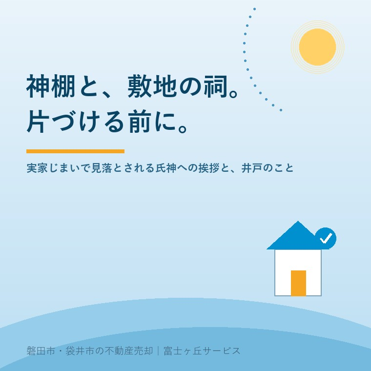

2026年8月13日｜カテゴリ：実家じまい・片づけ／売却実務

この記事の要点
Q. 親が施設に入り、実家を片づけることになりました。神棚と、庭の隅にあるお稲荷さんの祠は、どうしたらいいですか。捨てるわけにもいかず、そこで手が止まっています。
A. 順番があります。まず「お神札を社に納める」、次に「神職に祓いを依頼して宮形や祠をおろす」、最後に「氏神へ家じまいの挨拶」です。相談先は分かれていて、神棚は神社、仏壇は寺。そして不動産の側から申し上げると、敷地の祠と古井戸は、売買のときに「地中埋設物」や告知事項として必ず出てきます。埋め戻しや撤去は、片づけの最後ではなく売り出す前の段取りに入れてください。磐田市・袋井市・森町では、介護施設の運営から不動産事業を始めた富士ヶ丘サービスのような「介護×不動産」専門の会社に相談するという選択肢があります。
お盆です。今日、実家に帰られている方も多いと思います。
ご相談を受けていて、毎年この時期に必ず出てくる質問があります。「神棚は、どうすればいいですか」です。
不思議なもので、家財の処分、庭木の伐採、押し入れの中身──そういったものは業者に頼めば片づきます。ところが神棚とお神札、そして庭の隅の祠。ここで、必ず手が止まります。捨てられない。かといって、誰に聞けばいいのかも分からない。そのまま「また今度」となって、片づけ全体が半年止まる。何度も見てきた光景です。
今日は、この部分を段取りとして整理します。作法の側と、不動産の側の、両方から書きます。というのも、この話は「気持ちの問題」で終わりません。敷地の祠と古井戸は、売買契約の中身に直接はねかえってくるからです。
なお、作法そのものについては、当社が運営する磐田市内145社の神社データベース ATAWI SHRINE に、詳しくまとめた記事があります。本稿でも随所で参照します。
ここでつまずく方が、いちばん多いのです。
| 対象 | 相談する先 | 呼ばれ方 |
|---|---|---|
| 神棚・お神札・敷地の祠 | 神社（神職） | 神棚祓い／神棚じまい、御霊を遷す祭 |
| 仏壇・位牌 | 寺（菩提寺） | 閉眼供養（魂抜き） |
| 家財・遺品全般 | 遺品整理業者・解体業者 | ― |
神棚は神社へ、仏壇は寺へ。両方ある家が磐田では珍しくありませんから、実際には二か所に連絡することになります。「まとめてお願いできませんか」と聞かれることがありますが、これは分けざるを得ません。
仏壇と位牌については、以前仏壇と、位牌と、アルバムのこと。に書きました。今日は神社側の話を中心にします。
手順は、順番が決まっています。
① お神札を神棚から出し、社に納める → ② 神職に祓いを依頼する → ③ 宮形（お宮の形をした本体）をおろす
宮形は木の設えであり、「本体」は納められたお神札のほうだという考え方に立った順番です。神職に依頼せずに片づける場合でも、お神札だけは社に納めるのが通例とされています。
神社本庁の案内では、神棚には神宮大麻（伊勢神宮のお神札）・氏神神社のお神札・崇敬する神社のお神札の三つを納めます。三社造の宮形なら中央に神宮大麻、向かって右に氏神、向かって左に崇敬社。一社造なら手前から神宮大麻・氏神・崇敬社の順に重ねます。片づけのときに神棚から複数のお神札が出てくるのは、そういう理由です。
納め先を分ける必要はありません。受けた社と違う社に納めて差し支えないとされていますので、まとめて一か所に持参できます。旅先で受けたお神札やお守りが出てきても同じです。
神鏡や榊立てなどの神具は、お神札とは扱いが違い、清めて処分してよいと案内されるのが一般的です。御朱印帳は参拝の記録ですから、納める決まりはありません。形見として残される方もいます。
解体の見積もりのとき、神棚や仏壇の有無を尋ねる業者があります。家財と同じには扱えないという認識が、業者の側にもあるからです。
ここで大事なのは時間の順序です。解体日が決まってから神棚の相談を始めると、間に合わないことがあります。解体まで日がない場合でも、お神札を出して社に納めることだけは先に済ませておく。これだけで、後悔の質がずいぶん変わります。
祓いの謝礼は初穂料として包みます。金額は、依頼する社に直接尋ねて差し支えありません。「いくら包めばいいか分からないから電話できない」という方が多いのですが、聞いてよいことになっています。
ここまでの作法の詳細は、ATAWI SHRINE の実家をたたむときの作法 ── 神棚じまい・氏神への挨拶・家の記録に、お神札の納め方の図解を含めてまとめてあります。
ここからが、この地域の実際の話です。
「神職に相談してください」と書きましたが、磐田では相談先を見つけるのがひと仕事です。
| 項目 | 磐田市内の状況 |
|---|---|
| ATAWI SHRINE が把握している神社 | 145社 |
| 静岡県神社庁の掲載から授与品・御祈祷の案内を確認できる社 | 3社（矢奈比賣神社／見付・府八幡宮／中泉・貴船神社／掛塚） |
| 神職の常駐が確認できた社 | 数社にとどまる |
| 『静岡県磐田郡誌』（大正10年）で「代表者」欄に神職名がある社 | 市域146件中7件（うち3社は同じ宮司の兼務） |
神職が限られるのは、いまに始まったことではなく、百年前からの磐田の姿です。実家の氏神が無人の社である場合、その社に直接お願いすることはできません。
では、どうするか。
そして知っておいていただきたいのは、依頼する先が氏神そのものでなくても差し支えないとされていることです。祓いは神職が行う神事であって、特定の社でなければ成立しないというものではありません。相談先が見つからないからといって、片づけを止める必要はないのです。
ただし、神棚祓いや井戸祓いのような出張の祓いを受けているかは社によって違います。電話で確かめてください。
ここからが不動産側の話です。作法の問題だと思っていたものが、売買の条件に変わる場面があります。
土地の売買でいう地中埋設物とは、解体後のコンクリート片や瓦、木くずのほか、使っていない水道管、浄化槽、そして井戸など、もともと地中にあったものを含みます。
引き渡した土地に埋設物があって買主に損害が生じた場合、買主は売主に対して契約不適合責任として、追完（撤去）の請求、代金の減額、損害賠償、場合によっては契約の解除を求めることができます。
重要なのは、逆もまた真だということです。売買契約を結ぶ前に井戸や祠があることを告知し、契約書に明記しておけば、その部分について契約不適合責任を問われることはありません。隠すと責任になり、伝えると条件になる。実家じまいで神様に関わるものを扱うとき、この違いはとても大きいのです。
通知の期間についても押さえておいてください。改正民法566条では、買主は不適合を知った時から1年以内にその旨を売主に通知する必要があります。ご家族が売主となる個人間の売買では、この民法の原則が働きます。（宅建業者が売主で買主が一般の方の場合は、宅地建物取引業法により引渡しから2年以上とする特約でなければならず、2年未満の特約は無効です。）
つまり「引き渡したら終わり」ではありません。庭の隅の古井戸を「言わなくても分からないだろう」と伏せたまま引き渡すと、数か月後に連絡が来ることがあります。
井戸を埋め戻すときには、息抜きと呼ばれる手順が知られています。塩化ビニール製のパイプや竹を、井戸の底から地上まで通しておくものです。底に溜まった水やゴミを取り除いてから行います。
費用は、解体業者各社が公表している目安として次のような水準が示されています。
| 内容 | 目安（解体業者の公表による） |
|---|---|
| 古井戸の埋め戻し（単独で行う場合） | おおむね5万〜20万円程度（標準的には10万円前後） |
| 家屋の解体と同時に行う場合 | 3万〜5万円程度 |
| 神職・僧侶へのお祓いを依頼する場合 | 1万〜3万円程度 |
この表で読み取っていただきたいのは、金額そのものより「同時にやると安い」という一点です。解体を発注するときに井戸のことを言い忘れ、更地にしてから埋め戻しを追加すると、費用も工期も余計にかかります。解体の見積もり段階で「井戸があります」と伝えてください。
解体費用そのものの相場と、更地にした後の固定資産税については実家の解体費用はいくら？高騰の実情と「壊した後の税金」を知ってから決めるにまとめてあります。
敷地に屋敷神の祠がある家は、磐田の集落では珍しくありません。稲荷を祀る例が多く、邸内社とも呼ばれます。
撤去する場合は、神棚と同じく神職に祓いを依頼してからにします。祀られてきた期間が長いぶん、神棚より慎重に扱われるのが通例で、御霊を遷す祭を行ってから解体する形が案内されます。移転先に祠ごと遷すという選択もあります。
そして、不動産の実務として申し上げたいのはこちらです。祠を残したまま売るという選択も、実際にあります。
その場合は買主との相談になります。祀られてきたものであることを伝えたうえで扱いを決める。そのほうが、後々の行き違いを避けられます。「更地にして引き渡す」だけが答えではありません。引き継いでもらう、という道もあるのです。実際、庭木や祠を含めて「この家の雰囲気ごと欲しい」という買主に出会うことはあります。
残置物をどう扱って売るかという全体の考え方は、家財を残したまま実家は売れますか──「現況有姿・残置物あり」で売る方法と、付帯設備表で揉めないコツをご覧ください。
氏神は、住む土地を守る神です。その土地で暮らしてきたことへの感謝と、家をたたむという報告を、離れる前に伝えておく。これが家じまいの挨拶参拝で、転居のときの奉告参拝と同じ形です。
特別な作法があるわけではありません。ふだんの参拝と同じく二拝二拍手一拝で拝礼し、心のなかで報告すれば足ります。社務所のある社であれば御祈祷として受けてもらえることもありますが、必須ではありません。
いつ行くか。これはよく聞かれます。片づけのために遠方から通っている方が、作業のたびに立ち寄る必要はありません。家を引き渡す前に一度、参拝できれば十分です。本人が行けないときに家族が代わって参る、代理参拝という形も行われています。
「実家の氏神がどの社か分からない」というご相談も多く受けます。氏神と住所の対応は、おおむね大字や集落ごとに定まっているとされますが、文書で公開されているものではなく、地域の慣行です。親御さんやご親戚、氏子総代、自治会に尋ねるのが確実です。ATAWI SHRINE の地区別・大字別の一覧も手がかりになります。
これは、実家じまいの相談で必ず出てくる問いです。
形式のうえでは、氏子であるかどうかを決めるのは家柄ではなく住所とされます。転居すれば、新しい居住地の氏神の氏子になる。実家の氏神は、制度的な意味ではその人の氏神ではなくなる、という説明になります。
ただし、関わりの形は氏子だけではありません。土地との関係によらず個人として社を敬う「崇敬」という関わりがあり、生まれた土地の社に参り続けることを妨げる決まりはどこにもありません。神社本庁の案内でも、氏神神社は故郷を離れても守ってくれる大切な神社と説明されています。実家の氏神のお神札を、現住所の氏神のお神札と並べて神棚に祀って差し支えないともされます。
この問いを公開資料から掘り下げた研究ノートが、ATAWI SHRINE にあります。氏子と実家 ── 家を離れても氏神との縁は続くのかです。
そこに、印象的な数字が出てきます。『静岡県磐田郡誌』（大正10年）が氏子戸数を記す市内53社を集計すると、最小は向笠西の八幡神社で6戸、最大は川袋の八雲神社で1215戸。中央値は150戸でした。同じ「氏子」という言葉で呼ばれていても、一戸にかかる重みはまったく違ったわけです。6戸の社は、六つの家がすべてを担っていたことになります。
そして、この氏子戸数の記録は大正10年で止まっています。その後の公開記録はありません。6戸の社が5戸になったとき、それを記録する仕組みはどこにもない。実家をたたむということは、静かにその一戸が減るということでもあります。
重い話に聞こえるかもしれませんが、私はこれを「だから売るな」という話だとは思っていません。むしろ逆で、減ることを記録しないまま進むのが惜しい、という話だと受け取っています。
家をたたむと、その家が持っていた情報も一緒に消えます。
これらは登記簿にも権利証にも書かれていません。住んでいた人の記憶にしか残っていないのです。
ATAWI SHRINE で市内145社の由緒を調べていて痛感するのは、資料に記録されなかったことは二世代でほとんど辿れなくなるということです。神社の由緒でさえそうなのですから、一軒の家の記憶はなおさらです。
だから、片づけの途中で出てくる棟札、祭礼の写真、自治会の名簿。処分する前に、写真に撮っておくだけでも記録になります。凝ったものである必要はありません。家の外観と間取り、神棚と祠、庭。それぞれ数枚の写真と、分かる範囲の来歴を書いたメモ。それだけで、次の世代には十分な手がかりです。
片づけの順番として書き出しておきます。
| 順 | やること | 相談先・注意点 |
|---|---|---|
| 0 | 写真を撮る（神棚・祠・井戸・庭・棟札・祭礼の記録） | 片づける前。これだけは戻せません |
| 1 | お神札・お守りを社に納める | 古札納所のある社へ。まとめて可 |
| 2 | 神棚（宮形）の祓いを依頼する | 神社。無人の社なら兼務社・氏子総代・自治会へ |
| 2' | 仏壇・位牌の閉眼供養 | 菩提寺。神社とは別に連絡 |
| 3 | 敷地の祠・井戸の扱いを決める | ここで不動産会社に相談。売却の条件に関わります |
| 4 | 解体・遺品整理の見積もり（井戸・祠の有無を必ず伝える） | 同時施工のほうが安い |
| 5 | 氏神へ家じまいの挨拶 | 引き渡し前に一度。代理参拝も可 |
0番と3番が、多くの方の段取りから抜けています。そして抜けたときに、いちばん困るのがこの二つです。
当社は、磐田市見付で介護施設を運営するところから不動産の仕事を始めました。ですから、実家じまいのご相談は「売る・売らない」より、ずっと手前から始まります。
神棚と祠の話を、不動産会社がここまで書くのは珍しいかもしれません。ですが、私たちはこれを「余談」だとは思っていません。片づけが止まる理由の上位に、この問題があるからです。手が止まっているあいだ、固定資産税だけが毎年出ていきます。
もうひとつ。当社は磐田市内145社の神社データベース ATAWI SHRINE を運営しています。売却のために作ったものではありません。この土地に住み続けてきた記録が、誰にも引き継がれずに消えていくのが惜しかったからです。結果として、実家じまいのご相談で「氏神はどこですか」と聞かれたときに、その場でお答えできるようになりました。
目指しているのは、高く売ることだけではなく「家族が困らない売却」です。事実の整理にはふじがおか実家カルテを、片づけと処分の全体像は実家じまい相談室を、相続の入口は相続はじめ相談室をお使いください。
家をたたむことは、その家で営まれてきた暮らしを締めくくる仕事です。作法に完璧を期す必要はありません。順に、できる形で進めてください。そして、進める前にどうか一度、写真を撮っておいてください。売る・貸す・残すを考えるのは、そのあとでも遅くありません。
ふじがおか実家カルテ｜祠も井戸も、記録に残したうえで判断できます
片づける前に、一冊にしておく。
住所や固定資産税の納税通知書をもとに、名義・道路・境界・農地・調整区域の別・想定売却価格を整理して1冊にしてお渡しします。敷地の祠や井戸、庭木のことも遠慮なくお書き添えください。売却の条件に関わる部分として一緒に整理します。作成料0円・入力約1分。申込みだけで売却依頼にはなりません。
本記事は2026年8月13日時点で公開されている情報に基づく一般的な解説です。神棚・お神札・祠の扱いに関する記述は、神社本庁ほかの公開資料および当社運営 ATAWI SHRINE の整理によるもので、「こうしなければならない」という決まりではなく「こうする形が案内されることが多い」という水準のものです。作法や初穂料、出張の祓いの可否は社によって異なりますので、依頼される社に直接ご確認ください。仏壇・位牌の閉眼供養は菩提寺へご相談ください。井戸の埋め戻し・お祓いの費用は解体業者各社が公表する目安であり、井戸の深さ・立地・工法により変動します。実際の金額は必ず現地見積もりでご確認ください。契約不適合責任の内容・期間・特約の可否は個別の契約条件により異なり、宅地建物取引業者が売主となる場合と個人が売主となる場合で扱いが異なります。具体的な判断は弁護士または当社までご相談ください。相続登記は司法書士、相続税は税理士、農地の売買・転用は各市町村の農業委員会が窓口です。

この記事を書いた人：大石浩之（宅地建物取引士）
磐田市・袋井市・森町で「介護×相続×空き家」に特化した不動産売却支援を行う富士ヶ丘サービスの代表取締役・宅地建物取引士。介護施設の運営から不動産事業を始めた経験をもとに、売主とご家族が困らない売却を一件ずつお手伝いしています。プロフィール
磐田市・袋井市・森町の実家じまい・相続空き家相談
固定資産税通知書だけでも相談できます
住所があいまいでも、通知書や写真から名義・道路・農地・残置物の確認順を整理します。カルテ申込またはLINEで状況を送ってください。
富士ヶ丘サービス株式会社／静岡県磐田市見付5789番地1／TEL:0538-31-3308／静岡県知事 (2) 第14083号／代表取締役・宅地建物取引士 大石 浩之